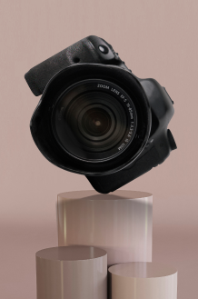

<<<<<<< Updated upstream
=======
<<<<<<< Updated upstream
=======
>>>>>>> Stashed changes
<!--Mobile Menu-->

<div class="mobile-menu">
  <button class="mobile-btn" type="button">
    <svg class="mobile-icon" width="32" height="32">
<<<<<<< Updated upstream
      <use href="../img/icons.svg#icon-x"></use>
=======
      <use href="/img/icons.svg#icon-x"></use>
>>>>>>> Stashed changes
    </svg>
  </button>
  <ul class="mobile-list">
    <li class="mobile-list-item">
      <a class="mobile-link current" href="">About us</a>
    </li>
    <li class="mobile-list-item">
      <a class="mobile-link" href="">Our courses</a>
    </li>
    <li class="mobile-list-item">
      <a class="mobile-link" href="">Our mentors</a>
    </li>
    <li class="mobile-list-item">
      <a class="mobile-link" href="">Reviews</a>
    </li>
    <li class="mobile-list-item">
      <a class="mobile-link" href="">Contacts</a>
    </li>
  </ul>
  <picture>
    <source
      media="(min-width: 768px)"
      srcset="
<<<<<<< Updated upstream
        ../../img/menu-img/tablet/camera.png    1x,
        ../../img/menu-img/tablet/camera@2x.png 2x
=======
        /img/menu-img/tablet/camera.png    1x,
        /img/menu-img/tablet/camera@2x.png 2x
>>>>>>> Stashed changes
      "
    />
    <source
      media="(max-width: 767px)"
      srcset="
<<<<<<< Updated upstream
        ../../img/menu-img/mobile/camera.png    1x,
        ../../img/menu-img/mobile/camera@2x.png 2x
=======
        /img/menu-img/mobile/camera.png    1x,
        /img/menu-img/mobile/camera@2x.png 2x
>>>>>>> Stashed changes
      "
    />

    >>>>>> Stashed changes
      alt="mobile-camera"
      loading="lazy"
    />
  </picture>
</div>
<<<<<<< Updated upstream
=======
>>>>>>> Stashed changes
>>>>>>> Stashed changes
